微程序设计 链接到标题
微程序设计思想的产生 链接到标题
使用组合逻辑设计的方式设计控制器，思路清晰、简单明了，但是电路庞杂，每个控制信号都需要单独的电路来完成控制信号的生成，如果要对指令集进行扩展，引入新的指令，其相关的微操作或者控制命令的逻辑电路都要进行修改。
采用微程序设计的思想来实现控制器，设计和修改都比较容易，可以方便的进行指令集的扩展，这种思想由英国剑桥大学教授 Wilkes 提出，利用高低电平控制每个节拍发出的控制命令。
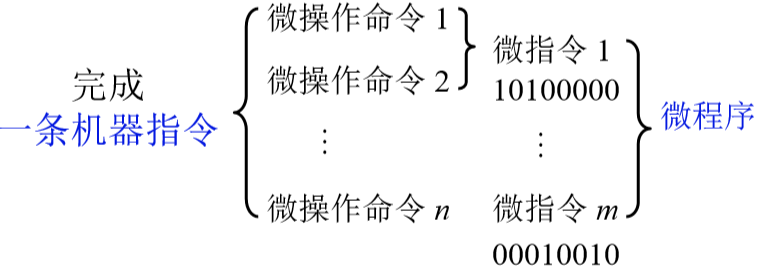
完成一条机器指令需要多个微操作命令，分在不同的节拍完成，如果在一个节拍内的多个微操作命令可以并行执行，可以将其组合起来构成一个微指令，这样一条机器指令可以由多个微指令完成，多个微指令就构成了一个微程序，微指令格式可以由二进制代码来表示，1/0 代表高低电平有效，如果一个节拍中要发送控制信号，可以由 0 或者 1 控制相应的部件生成信号，并且控制相应的微操作命令执行。
一条机器指令对应一个微程序，每个微指令包含若干个控制信号，微指令的先后顺序就是微程序在设计上的先后顺序，将微指令存入 ROM，执行时将微指令逐条读出，根据微指令有效位数，发送信号。
微程序控制单元框图及工作原理 链接到标题
机器指令对应的微程序 链接到标题
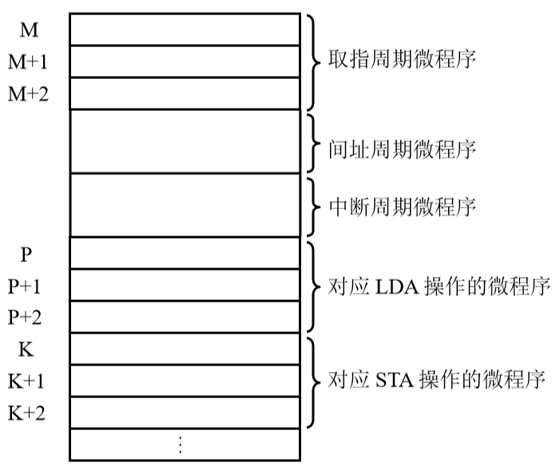
取指周期有三个节拍，所以由三个微指令完成，每个节拍对应一条微指令，微指令完成每个节拍的微操作。
微程序控制单元的基本框图 链接到标题
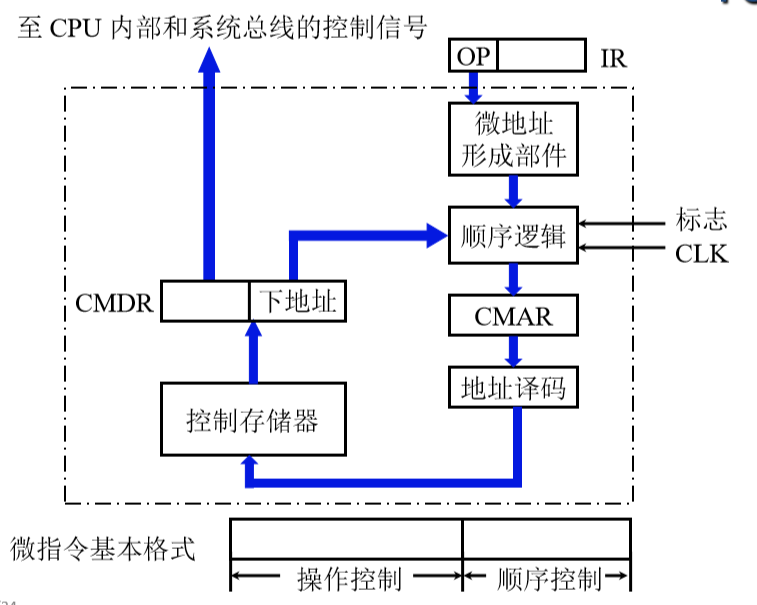
微程序、微指令都保存在控制存储器，取出微指令，需要知道微指令的地址，微指令的地址保存在一个寄存器中，也就是控制存储器地址寄存器(CMAR)，这个地址进行译码之后就可以送入控制存储器，控制存储器只读，读出来的微指令放入一个 CMDR(控制存储器数据寄存器)中，微地址形成部件需要接受 IR 中操作码部分送来的信号，微地址形成部件下面有一个顺序逻辑，顺序逻辑负责从 CMAR 中选择正确的来源(也就是多种”下地址”生成方式的来源)，将其送入 CMAR。
微指令基本格式：
- 操作控制，由 0 和 1 组成，每一个位置代表一个操作信号。
- 顺序控制，给出下一条微指令的地址。
微程序控制单元分析 链接到标题
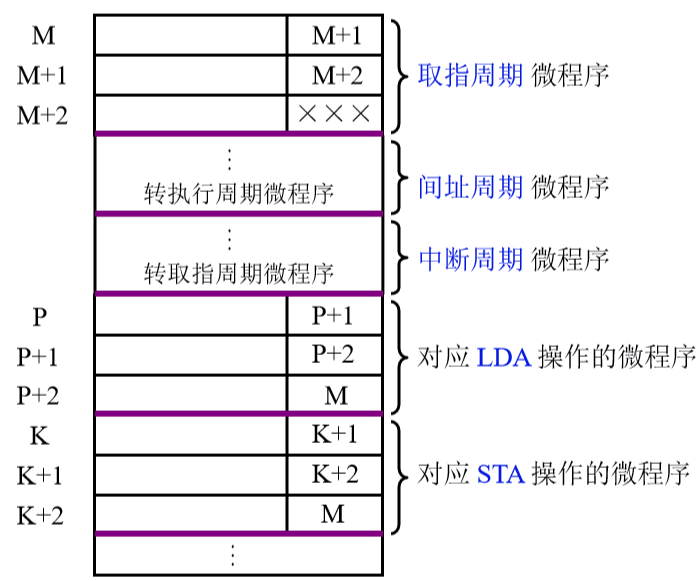
每一条微指令右边存放下一条微指令的地址，假设该程序没有间址和中断周期，M-M+2 这三条指令将指令取出，至于取出的指令是什么指令，需要经过指令译码才能知道去执行周期执行哪一个微程序，这个过程由微地址形成部件来做的，微地址形成部件根据取来的这条指令的操作码，形成这条指令它在执行阶段所在的微程序在控制存储器中保存的位置，所以由 XXX 表示。
微程序工作原理 链接到标题
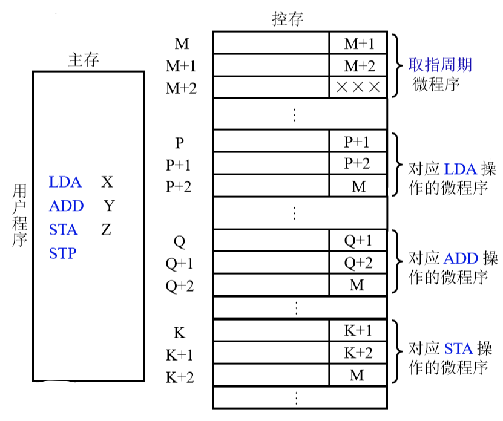
取指阶段 链接到标题
M->CMAR，(控制存储器中 M 的内容送入 CMAR，由 CMAR 指出第一条微指令在控制存储器的首地址)
CM(CMAR)->CMDR(控制存储器中保存的指令取出，送入到 CMDR，CMDR 保存了要执行的控制信号)
由 CMDR 发命令形成下条微指令地址 M+1
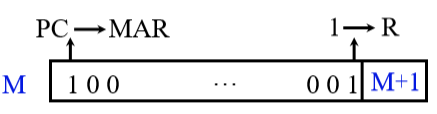
Ad(CMDR)->CMAR(将地址码部分通过顺序逻辑送入 CMAR)
CM(CMAR)->CMDR(将 CMAR 指出的地址所指向的控制存储器的单元所保存的微指令送入 CMDR)
由 CMDR 发命令形成下条微指令地址 M+2
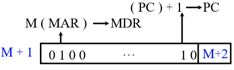
Ad(CMDR)->CMAR CM(CMAR)->CMDR 由 CMDR 发命令，进入间址阶段或执行阶段
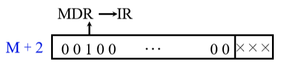
执行阶段 链接到标题
OP(IR)-> 微地址形成部件->CMAR(p->CMAR)
CM(CMAR)->CMDR
由 CMDR 发命令，形成下一条微指令地址 P+1
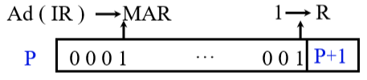
Ad(CMDR)->CMAR(CMDR 地址码部分送入 CMAR)
CM(CMAR)->CMDR
由 CMDR 发命令，形成下一条微指令地址 P+2
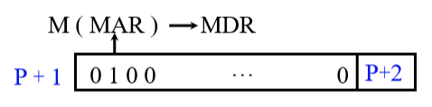
Ad(CMDR)->CMAR
CM(CMAR)->CMDR
由 CMDR 发命令，形成下条微指令地址 M
Ad(CMDR)->CMAR
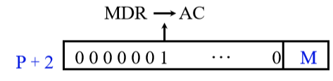
- 全部微指令存在 CM 中，程序执行过程中只需读出
- 微指令的操作控制字段如何形成微操作命令
- 微指令的后续地址如何形成
微指令的编码方式(控制方式) 链接到标题
直接编码方式 链接到标题
在微指令的操作字段中，每一位代表一个微操作命令
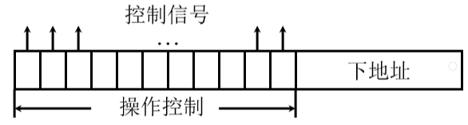
某位为”1”表示该控制信号有效，这种方式控制信号由某一位直接给出，不需要译码，所以速度最快。
字段直接编码方式 链接到标题
将微指令的控制字段分成若干”段”，每段经过译码后发出控制信号
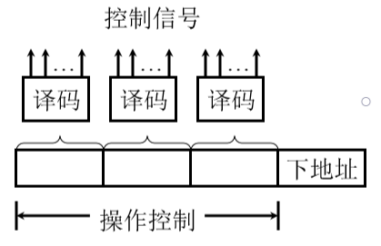
每段译码只有一位是有效信号，每一位都代表在这组或者这一段中的一个微操作，如果译码结果有 $2^n$位，代表有$2^n$个微操作,但只有一个有效，所以每个字段中的命令是互斥的，这种方式称为显示编码，优点是缩短了微指令字长，增加了译码时间，所以微程序执行速度较慢。
字段间接编码方式 链接到标题
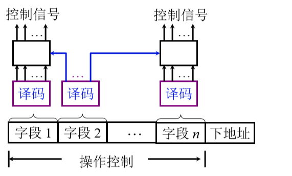
每个字段的译码结果不仅和本字段的输入有关，还和其他字段译码结果相关
混合编码 链接到标题
直接编码和字段编码混合使用
微指令序列地址的形成 链接到标题
-
微指令的下地址字段指出
-
根据机器指令的操作码形成
-
增量计数器(CMAR)+1->CMAR
-
分支转移(也就是地址跳转)
- 由操作控制字段、转移方式、转移地址组成
- 转移方式：指明判别条件
- 转移地址：指明转移成功后的去向
-
通过测试网络
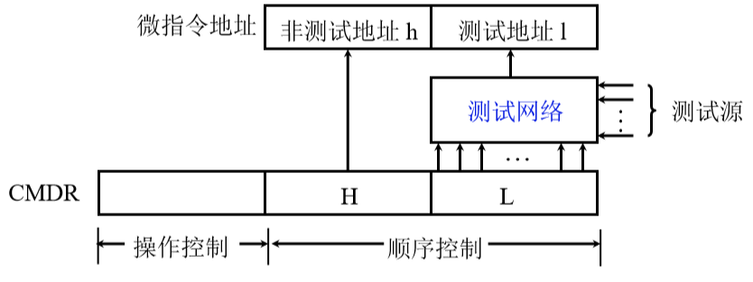
-
由硬件产生位程序入口地址
- 第一条微指令地址由专门硬件产生
- 中断周期，由硬件产生中断周期微程序首地址
-
后续微指令地址形成方式原理图
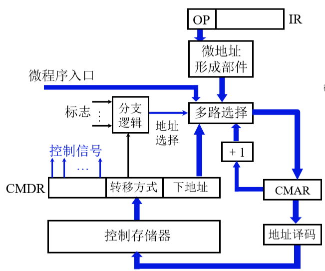
微指令格式 链接到标题
-
水平型微指令，一次能定义并执行多个并行操作
- 直接编码、字段直接编码、字段间接编码、直接和字段混合编码
-
垂直型微指令
- 类似机器指令操作码的方式
- 由操作码字段规定微指令的功能
两种微指令格式的比较 链接到标题
- 水平型微指令比垂直型微指令并行操作能力强，灵活性强
- 水平型微指令执行一条机器指令所要的微指令数目少，速度快
- 水平型微指令用较短的微程序结构换取较长的微指令结构
- 水平型微指令与机器指令差别大
静态微程序设计和动态微程序设计 链接到标题
- 静态，微程序无须改变，也就是指令集不变，将为程序存入 ROM
- 动态，通过改变微指令和微程序改变机器指令，有利于仿真，采用 EPROM
豪微程序设计 链接到标题
基本概念 链接到标题
- 豪微程序设计用微程序解释机器指令
- 豪微程序设计用豪微程序解释微指令
- 豪微指令与微指令的关系好比微指令和机器指令的关系
豪微程序控制存储器的基本组成 链接到标题
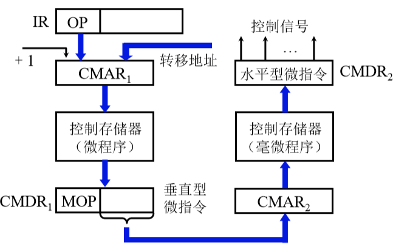
串行微程序控制和并行微程序控制 链接到标题
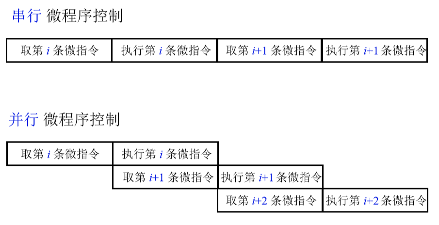
微程序设计步骤 链接到标题
-
写出对应机器指令的微操作及节拍安排
- 取指阶段微操作分析
- 取指阶段的微操作及节拍安排
- 执行阶段的微操作及节拍安排
-
确定微指令格式
- 微指令的编码方式
- 后续微指令的地址形成方式
- 微指令子串
- 微指令字长的确定
- 定义微指令操作控制字段的每一位操作
-
编写微指令码点